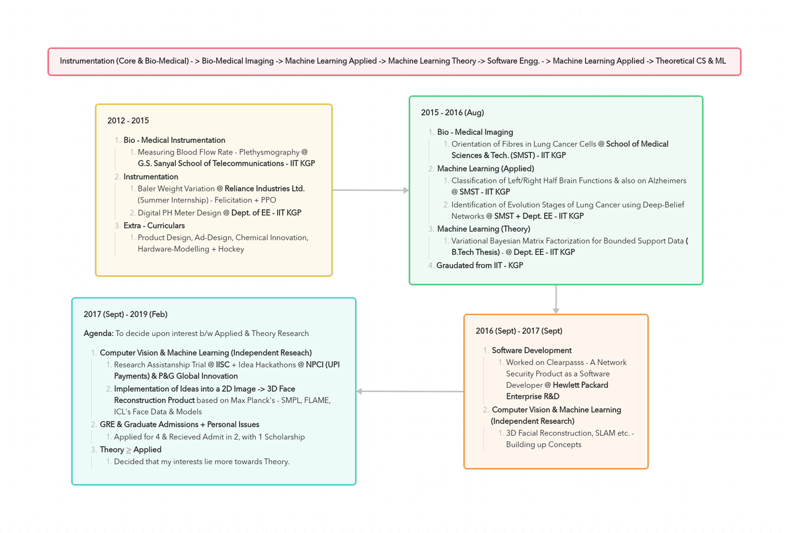

Past, Present & Future - I
Table of Contents
2012 - 2016 : Bachelors Degree etc.
I graduated with a Bachelors Degree in Instrumentation Engineering (EE) from IIT Kharagpur in 2016. During my bachelors, I started with working on Biomedical Devices, Instrumentation in 2nd year (summer) planning to specalise in Bio-Medical Instrumentation.
Later, in my third year I associated with PhDs working on Bio-Medical Imaging & Machine Learning (Applied) at School of Medical Sciences (SMST) - IIT KGP. In 3rd year summer (2015), I did an internship at Reliance Industries Ltd., Surat. There, in recognition to my work, I was specially felicitated by VP-Engineering for solving a long-standing problem in their Rubber Manufacturing Plant. For this, I was also awarded a Pre-Placement Offer (I didn't take up the offer).
In my final year, I got placed in Hewlett - Packard Enterprise - HPE (they said it was R&D while recruting, buggers ended up making me do software).
Variational Bayesian Matrix Factorization for Bounded Support Data1, is the title of the IEEE-TPAMI paper which I took up for my graduation thesis project. I found errors in their core algorithm equations and informed about the corrections to them, which they had accepted but sadly, the corrections weren't significant enough to write a fresh paper. 😕
Projects that I worked on during my Bachelors
-
Modelling the Transitions in Lung cancer cells and classification of different cells using Deep Belief Networks
- Modelling different stages of epigenomic cells and classifying them into 4 different transition stages with an accuracy of 97.5% and 89.9% respectively for binary and multi-class problems.
-
Measurement of Fiber Angular Orientation Distributions in the Lung Cancer Cells2
- Using the fourier components for determining the orientation. Can be used to identify the alignment of objects with good accuracy.
-
ARMS-Robotic Arm Sleeves
- Interfaced EMG sensors and IMU with a robotic arm using Xigbee protocol and Atmega 16 microcontroller for mimicing the human arm movements (group project).
-
Worked on classification of Alzheimer’s diseased and non diseased persons with EEG
- Using EEG signal features for classifying diseased and non diseased person.
-
Examination of various feature extraction and selection techniques for binary classification problem of Right half and Left half brain activity based on EEG signals.3
- Performing Pre processing using STFT transformation and using alpha,beta,etc. components as features to classify
-
Design and Construction of a low cost Digital PH-meter using constant phase element as sensor4
- Designed and constructed a low cost PH-meter from scratch using Operational-Amplifiers and Logic gates(for condition-ing the output of sensing element, PMMA, DQN-70 coated probes
-
Analog circuit design for Measuring Heart Rate and Blood flow rate - Plethysmography
- Designed and constructed circuitry for measuring the blood flow rate using plethysmography technique from basic low-pass filters and Instrumentation Amplifiers.
-
Sanjeevani
- Conceptualized and designed a prototype of a product which is made by bringing all kinds of card tests in one compact machine to detect conditions of diseases (group project).
Here are a few courses I took during my bachelors which aligned with my then interests:
- Machine Learning,
- Computational Methods & Algorithms in Signal Processing,
- Probability & Statistics
- Digital Image Processing,
- Information Theory,
- Computer Networks etc.
During my bachelors, I have been part of various extra-academic activities:
- Part of a Gold-Winning Ad-Design Team, Product Design Team, Chemical Innovation Team & Hardware Modelling Teams.
- Played hockey (briefly) during my 2nd year
- Guided some of juniors for an Open-IIT Product Design Competition.
2016 - 2019: Job, Research, Masters & UPSC
I joined HPE in Aug'16, there I worked on Spring Boot Frameworks, Hibernate etc. Initially, I did some (junk) Splunk setup & Automation works. Later, some UI bugs they made me fix and by the end I was mostly doing some Backend stuff (on whole, I got some full stack experience) for a Network Security Product. I was awarded a cash prize for delivering a concept against DDoS attacks and new directions for the product. Alas, I didn't find the work much interesting, I realized that I would be better at doing R&D works than software.
So, I resigned in Sept'17, hoping to apply for Masters in 2018 (starting MS in 2019), after spending some time on my own to identify my interests precisely.
During this period, from graduation till my resignition (Aug'16 - Aug'17), I have gained some interest in Prof. Ira Kemelmacher's working areas - 3D Facial Reconstruction, SLAM (partly) etc. Also, back then, there wasn't much buzz about Deep Learning etc. yet, not at least in India. Though Yann's, Hinton's & Fei-Fei's models were just starting to make some noise, they didn't get much attention (that's what I think). The pre-doc programs at MSR-India, Google etc., were also not so well known back then.
I resigned my job at HPE, but had to spend some time on the growing heap of works then (ML & DL buzz just got picked up) to decide upon my interests between ML Theory & ML Applied.
For my thesis, I worked on Machine Learning Theory, but I also started gaining some interest in 3D Facial Reconstruction, SLAM etc. So, to check with the dilemma, I decided to apply for Research Assistanship at IISC - CSA. At that time, having some of prior experience a little statistically inclined, I found Ambedkar Dukkipati for (ML-Theory) & VAL Lab in CDS (for ML in images - Computer Vision etc.) as professors suitable to work with.
I applied for VAL Lab and was asked to attend an interview for an RA Position. I did attend, but came back in the middle of the interview after having some argument with them about their notations on Regression's Cost Minimization Function and an equation related to the function which they asked me to derive. Also, I realised that they wanted me more for the implementation parts of the project than for the theoretical understanding of workings of Deep Learning on images.
I returned to home, used up the last amounts of my salary left in my bank account to build a PC. It costed me around 1 Lakh, I assembled the PC myself, where I bought the parts in all kinds of sales. By that time, AWS & Google Cloud - GPUs & TPUs services weren't much known, I think they didn't even get started. So, that's why I had to burn so much of my money.
Anyways, between Oct'17 - Jul'18. I built my PC, installing all softwares & their patches, version matchings (all of this took loads of time, which one might easily misjudge as too much since it is has become very easy now to create a setup ready for ML & DL works).
In May'18, I've participated in two Ideathons (Ideas' Hackathons)
- Rupay Contactless Ideathon (by NPCI, related to UPI Payments)
- P&G's Global Innovation Challenge
In the Rupay's Hackathon, I was one (solo) of the Top 10 finalists5 among 1.2K teams (2 allowed per each team).
In P&G's hackathon, two of my solutions were shortlisted in Top 50 ideas, this too similarly around 1.2K teams took part (4 allowed per each team). I resigned and didn't proceed further to the next levels of hackathon.
Then, I started by first picking up & working on concepts of 3D Facial Reconstruction.
List below, are some of research groups whose works I have tried to build upon my product.
- Hao Li - Demo6 , Demo7
- Ira Kemelmacher8
- Patrik Huber's9 was the most easily accessible work of all at that time.
- Max Planck Institute(MPI)'s models for face10 & body11 - Amazon purchased the venture with the name Body Labs which was being developed by these researchers at MPI.
- Yisong Yue's group integrated the component of voices/lip movement to faces - Demo12
- Imperical College London's Group - ICL's13 work was the most promising way for 3D Realistic Face Avatars. That's why Facebook bought their work right away.
I have tried to access and replicate these works in order to come up with a product that would take in something like a 2D frontal face input and convert it to 3D avatar. I've gone through entire code bases and debugged their works, even found some errors in ICL's works and made them aware, to which they didn't care much to respond 😅.
From Jul'18 - Aug'18, I have prepared for GRE and gave the exams. I got 169/170 in Maths, but 151/170 in English (320 overall). I knew that english would be my pain point at that time for GRE.
Getting back to 3D faces, somewhere in and around Sept'18, Apple came up with its Augmented Reality (AR) Tech. by adding a depth front camera to its IPhone. It was with this, all my 3D Face Reconstruction dream world came down crashing to an end.
Till then, I was trying to build something which would take in a 2D image and spit out a 3D caricature, with an addition of some voice regarding developments as well (possibly). But, the avatars which Apple came up with were so cool that how much ever I may try to come with a system that's efficient in 2D frontal image to 3D face conversion, it can never be as cool as Apple's due to its depth camera addition to the mobiles.
All of a sudden, the friendly 3D reconstruction tech became so affordable, especially for faces.
In Nov'18, I was already late by then, I started collecting recommendation letters from professors & some of my mentors from my resigned workplace. I had to go to IIT to get recommendation letters from my bachelors advisor. Amidst this mess, when I went to Delhi to visit some of my friends who were preparing for UPSC already by then for more than over a year, a family issue arised which required my utmost attention. Majority of my time between Nov'18 - Jan'19 (mid) went away in roaming around hospitals.
During this time, simultaneously I finished my applications for Masters Programs in Computer Science. I applied to 4 colleges and got accepts from University at Buffalo - SUNY, University of Texas - Dallas (with scholarship). But, I wasn't quite satisfied mith my accepts. I knew that my language skills have improved a little but I failed to recognise that they weren't good enough to write a gramatically correct & an engaging SOP. I must have taken some assistance, Sigh! 😕
Change in Pursuit
In Feb'19, things became normal at home and running around hospitals has come to an end. The time spent at hospitals changed my outlook towards life drastically. I witnessed hospitals charging unscrupulous rates and treating with sub-standard equipment, especially those people, whose expenses are paid from the govt. health insurance policies - poor, employees etc. All such issues have pushed me to give a shot at UPSC, before I leave for Masters in Aug'19.
So, in Feb'19 without any knowledge, by just looking at some blogposts (Anudeep's etc.), I decided to pursue UPSC, picked up a few books online, shifted myself to Hyderabad to a secluded place and started preparing. As I wasn't much happy with the accepts and also having realised that my interests were more inclined towards theory, I dropped my plan of pursuing Masters (MS) abroad (saving myself from hefty expenses).
Since then, I have been in the UPSC journey and simultaneously charting out my career towards becoming an independent researcher by habit.
Summary:
please open the image in a new tab for better clarity
References:
-
Variational Bayesian Matrix Factorization for Bounded Support Data ↩
-
Measurement of Fibre Angular Orientation Distribution of Lung Cancer Cells ↩
-
Exploring Dimentionality Reduction of EEG Features in Motor Imagery Task Classification ↩
-
A Phase Angle Measurement Based Conductivity Sensor for Low Conductance Solution ↩
-
Photorealistic Facial Texture Inference using Deep Neural Networks ↩
-
Avatar Digitization from a Single Image for Real-Time Rendering ↩
-
AvatarMe: Realistically Renderable 3D Facial Reconstruction "in the wild" ↩